Climates of the Future
EES 3310/5310
Global Climate Change
Jonathan Gilligan
Class #17: Friday, February 14 2020
Using Models to Test Theories about the Cause of Global Warming
Stratosphere vs. Troposphere:

Day vs. Night

Modeling for
Science vs. Policy
Modeling for Science vs. Policy
Integrated Assessment Models (IAMS)
- Combine climate system and world economy
- Emissions as a consequence of economic activity
- Energy use for production (factories, etc.)
- Energy use for consumption (households, etc.)
- Farming: fertilizers, livestock, paddy fields, etc.
- Climatic impacts on economy
- Cost of severe weather
- Sea level rise
- Droughts & heat waves
- …
- Emissions as a consequence of economic activity
- Optimize for greatest net economic output
Predictions & Projections
- Predictions are hard:
- Biggest uncertainty in predicting future climates is GHG emissions
- We can predict consequences of emissions
- We can’t predict what emissions will be
- Projections:
- Conditional predictions:
- “If emissions do this, then climate will do that.”
- Scenarios and Pathways of future emissions:
- Scenario:
- Start with a story of economic & political development
- Calculate resulting emissions
- Pathway:
- Start with possible emissions trajectory
- Develop a plausible story that could produce it
- Scenario:
- Conditional predictions:
Projections for future emissions in US:
| 2010 | 2050 | Growth rate | |
|---|---|---|---|
| g ($/person) | 42,300 | 83,495 | 1.7% |
| ef (tons/$million) | 432 | 228 | -1.6% |
| P (millions) | 309 | 393 | 0.6% |
|
Total Emissions \(F\) (million tons CO2) |
5,647 | 7,471 | 1.7 - 1.6 + 0.6 = 0.7% |
Projections for future world emissions:
| 2010 | 2050 | Growth rate | |
|---|---|---|---|
| g ($/person) | 9,780 | 22,654 | 2.1% |
| ef (tons/$million) | 522 | 275 | -1.6% |
| P (millions) | 6,410 | 9,188 | 0.9% |
|
Total Emissions \(F\) (million tons CO2) |
32,724 | 57,289 | 2.1 - 1.6 + 0.9 = 1.4% |
Uncertainties in Projections
Projections for future world emissions:
| 2010 | 2050 | 2100 | Growth rate | |
|---|---|---|---|---|
| g ($/person) | 9,780 | 22,654 | 64,737 | 2.1% |
| ef (tons/$million) | 522 | 275 | 124 | -1.6% |
| P (millions) | 6,410 | 9,188 | 14,409 | 0.9% |
|
Total Emissions \(F\) (million tons CO2) |
32,724 | 57,289 | 115,366 | 1.4% |
Uncertainties in Projections
Projections for future world emissions
with slightly different growth rates:
| 2010 | 2050 | 2100 | Growth rate | |
|---|---|---|---|---|
| g ($/person) | 9,780 | 24,541 | 77,505 | 2.3% |
| ef (tons/$million) | 522 | 298 | 148 | -1.4% |
| P (millions) | 6,410 | 9,563 | 15,766 | 1.0% |
|
Total Emissions \(F\) (million tons CO2) |
32,724 | 69,973 | 180,930 | 1.9% |
| Difference | 12,684 | 65,564 | 0.5% | |
| Difference (%) | 22% | 57% |
Decisions Under Uncertainty
- Global Climate change:
- Great Certainty:
- People are warming the planet.
- Warming will continue long after CO2 stops rising.
- Changes will persist for thousands of years.
- Uncertain:
- How much will planet warm (factor of ~2).
- Great Certainty:
- Impacts of Global Climate Change:
- Fairly Certain:
- Severe heat waves will get worse.
- Drought will get worse for much of the planet.
- Intense rain & floods will get worse.
- Very Uncertain:
- Hurricanes & tornadoes.
- Fairly Certain:
- Local/Regional Climate Change
- Fairly certain about some detailed local impacts.
- Enormously uncertain about others.
Consequences of Climate Change
-
Economic effects:
- Costs of acting
- Costs of inaction
- Uncertainties
-
Policy issues:
- Markets vs. Regulation
- Externalities
- Kaya Identity: \(F = P \times g \times e \times f\).
- Markets vs. Regulation
Tipping points
What we know about tipping points
- Very hard to predict them.
- Climate Casino: important tipping points:
- Ice sheet melting
- Coral reefs
- Tropical rain Forests
- Runaway greenhouse gas release
- Slowdown of ocean conveyor belt circulation
- …
Bistability & Tipping Points

Hysteresis and Tipping Points
GRANTISM Model
Hysteresis:
Temperature and Ice Sheets
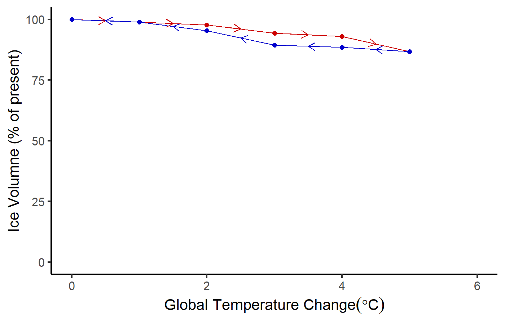
Hysteresis:
Crossing Tipping Point
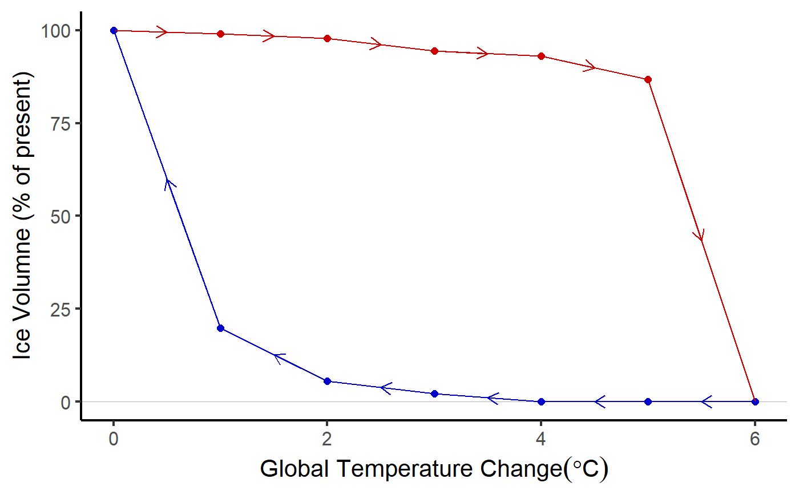
Principles of Tipping Points
- Ordinary positive feedbacks amplify changes
(hot → hotter, cold → colder).- Small positive feedbacks amplify but the system remains stable.
- If positive feedbacks are too strong they become self-perpetuating.
- Secondary forcing from feedback creates unstoppable change.
- If feedback strengthens with warming:
- Tipping point: feedback becomes strong enough
to continue warming independent of external forcing.
- Tipping point: feedback becomes strong enough
- Not all positive feedbacks have tipping points.
- Hard to predict when a positive feedback might go from amplifying to runaway (tipping point).
Where are they?
- Climate Casino: No big danger of fast tipping points if warming stays less than 3°C
- But, recent research finds that West Antarctic Ice Sheet has already crossed irreversible tipping point.
New Scientific Paper
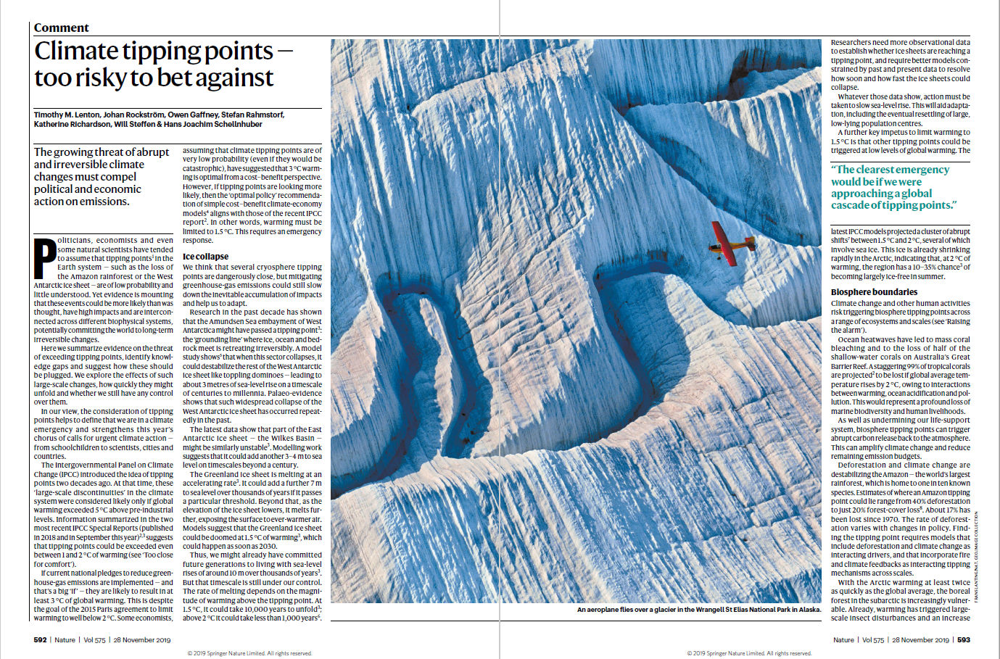
T. Lenton et al., Nature 575, 592 (2019).
But Can We Trust the Experts?
But Can We Trust the Experts?
Marsha Blackburn
Did temperatures stop rising 18 years ago?
Look at 1970–2014
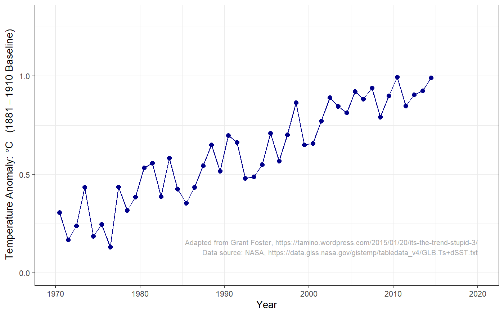
Did temperatures stop rising?
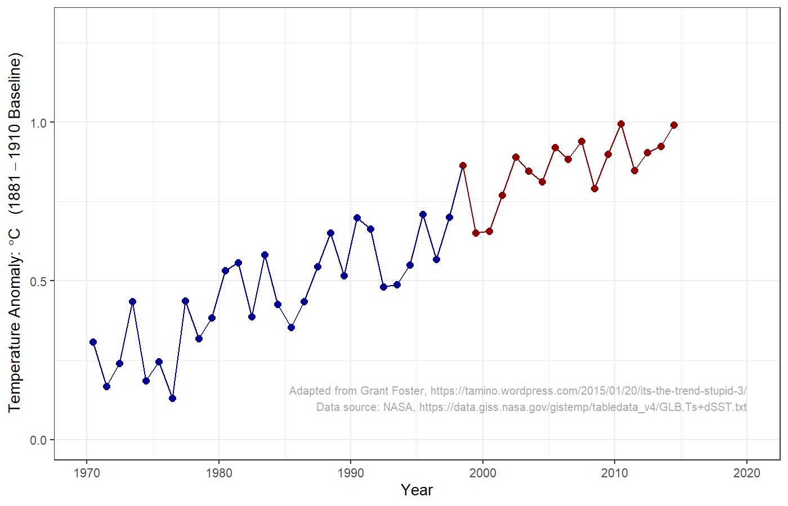
Did temperatures stop rising?
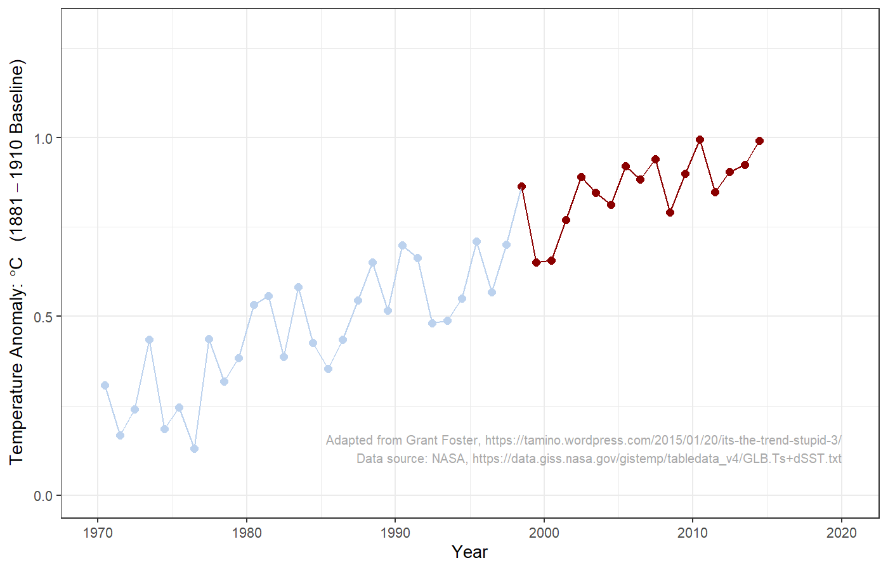
Did temperatures stop rising?
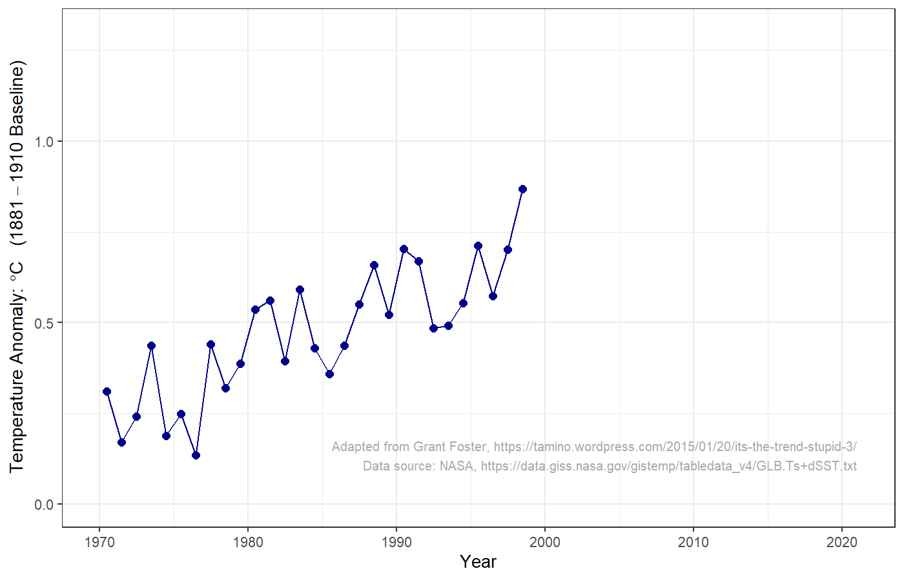
Did temperatures stop rising?
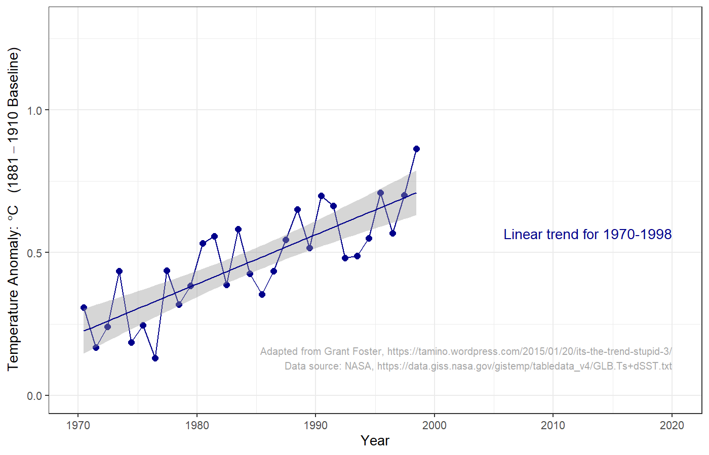
Did temperatures stop rising?
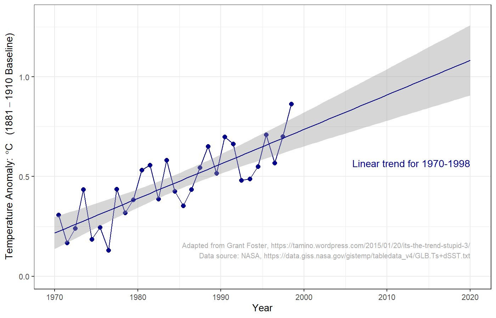
Did temperatures stop rising?
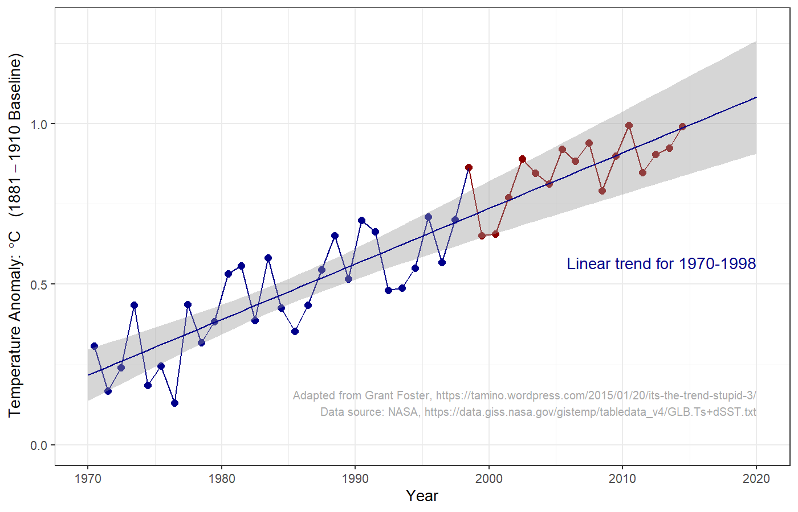
Did temperatures stop rising?
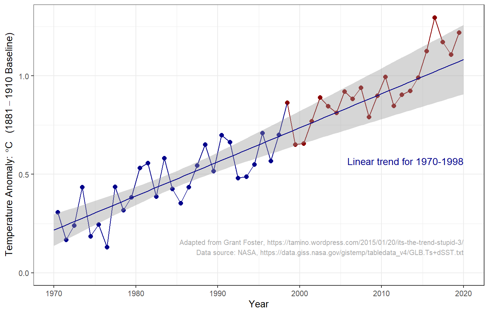
What is the Scientific Consensus?
What is the Scientific Consensus?
- Is there a consensus?
- If there is, should we trust it?
What is the Scientific Consensus?
- Is it important whether most scientists agree or not?
- What if some scientists disagree?
- Do most scientists agree?
- Careful reviews of scientific literature find 95% of scientists publishing about climate change believe planet is warming because of human activity.
Dissident Scientists

Peter Duesberg
- Famous biology professor
- Member National Academy of Science
- Major discovery of cancer-causing virus
- Claims that HIV virus does not cause AIDS

Kary Mullis
- Nobel Prize in medicine/biology
- Invented PCR for analyzing DNA
- Endorses Duesberg’s theory of AIDS
Meaning of Consensus
- Does scientific consensus mean we can be
100% certain that people are warming the planet? - What about the future impacts of climate change?
What Gets in the Way of Policy?
What Gets in the Way of Policy?
- Politicians don’t understand science?
- Public doesn’t understand science?
- Scientists don’t understand politics?
Issues for Policy
- What do scientists agree on?
- Should policy focus on limits to CO2 or \(\Delta T\)?
- Should policy wait for better scientific certainty?
- Uncertainty:
- How much warming is “dangerous”?
- How much CO2 would produce dangerous warming?
- Are there tipping points?
- If so, where are they?
- Addressing uncertainty:
- Precautionary principle
- Better safe than sorry
- No regrets policy
- Worth doing even if global warming turns out to be not so bad.
- Precautionary principle
1979 Report
Carbon Dioxide and Climate:
A Scientific Assessment
The conclusions of this brief but intense investigation may be comforting to scientists but disturbing to policymakers. If carbon dioxide continues to increase, the study group finds no reason to doubt that climate changes will result and no reason to believe that these changes will be negligible. … A wait-and-see policy may mean waiting until it is too late.
National Research Council, Carbon Dioxide and Climate:
A Scientific Assessment (Nat’l. Academy Press, 1979)
Review of MODTRAN
MODTRAN:
- MODTRAN calculates emissions and absorption of longwave light in the atmosphere.
- Things that don’t change during a run:
- Heat from the sun
- Set by “locality” of the atmosphere
- Temperature of the ground and every layer of the atmosphere.
-
Set by “locality” of the atmosphere and “temperature offset”
Locale Iout (W/m2) Tground (K) U.S. Standard Atmosphere 267.98 288.2 Tropical 298.67 299.7 Midlatitude winter 235.34 272.2
-
- Heat from the sun
- For every wavenumber, MODTRAN calculates heat emission and absorption up and down at each layer.
MODTRAN:
- Emissivity (\(\varepsilon\)) = absorption
- Fraction absorbed by layer \(= \varepsilon\)
- Radiation emitted by layer \(= \varepsilon \sigma T^4\)
- \(\varepsilon\) small (near zero):
- Little absorption or emission.
- \(\varepsilon\) large (near one):
- Almost all incoming radiation is absorbed
- Emission close to black body at temperature T.
- \(\varepsilon\) is large for wavenumbers where greenhouse gases absorb strongly.
- Greater concentration \(\rightarrow\) larger \(\varepsilon\)
- \(\varepsilon\) is small where there is little absorption
- Atmospheric window
- Sensor sees emission at the temperature of the nearest layer with large \(\varepsilon\):
- Looking down from space:
- highest layer with large \(\varepsilon\).
- In atmospheric window, that layer is near the ground
- With clouds, it’s often the top of the highest cloud
- Looking up from ground:
- lowest layer with large \(\varepsilon\).
- In atmospheric window, there’s no such layer, so you see very little emission
- With clouds, it’s often the bottom of the lowest cloud
Example: Looking Down
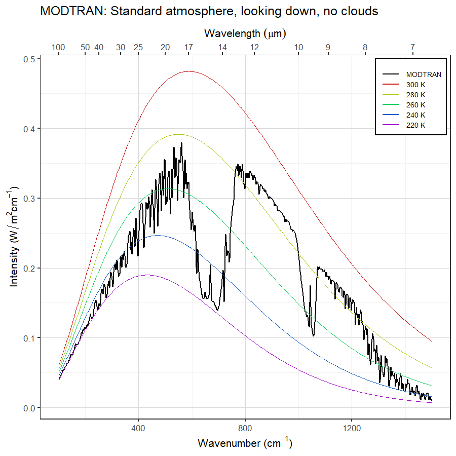

Example: Looking Up